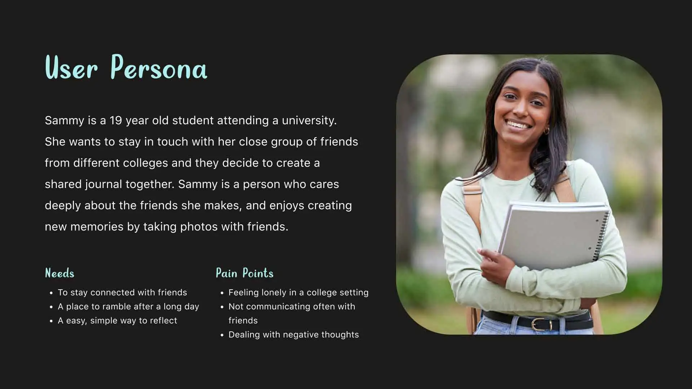

Inkling
Overview
I elevated an app's UX by creating microinteractions and sleek UI designs in Figma, and animating these interactions with After Effects, all the while gaining insights into timing and user flow to enhance intuitive experiences.
Details
Student Project
Apr-Jun 2023
UI/UX Design, Interaction Design, App Design
Figma, After Effects
Microinteractions are essential to interface design
Throughout my 10 week Interaction Design class, I learned the importance of microinteractions supported by triggers, feedback, rules and modes and applied this knowledge to rebrand an app with newly imagined interactions.
As a result, I gained a better understanding of how interaction design contributes to making products that understand people, increasing my interest towards creating immersive products.
The User
First, this redesign and rebranding process began with choosing an app with a singular focus and researching its target user.
Waffle, now reimagined into Inkling, is a group journaling app for couples, family and friends to collaborate and write journal entries together.
- Since Inkling targets youth and college-age adults to create shared journals, this is where Sammy comes in. As a college freshman seeking to keep friendships from high school strong, Sammy is a perfect match.
Diving into the personality of Inkling
In order to reimagine the app's common user flow of opening the app and creating and posting a new journal entry, I started with sketches for possible microinteractions to explore in my final demonstration
What is the personality of my brand, and how did I want it to move at different touch points?


Creating a cohesive user flow
From my wireflow to IX Flow, Inkling's UI design and its user journey changed over time. I simplified the user flow to four tasks and experimented with different depictions for the app's UI elements.
In the high fidelity IX flow featured below I made sure to provide the feedback the app gives whenever the user presses the screen.


While rebranding, I placed a focus on dark gray and light teal to create a minimal, sleek impression that still felt calming for the user to enter. With dark mode creating a tranquil space, users are encouraged to spill their thoughts freely.
With my high fidelity UI design settled, I moved on to establishing the microinteractions I would animate by creating an interaction guide. This would make it clearer when creating translated keyframes in After Effects.
I placed a heavy focus on interactions involving Inkling's core purpose
- For example, to symbolize the excitement that comes from a new idea or the frenzied feeling of wanting to jot feelings out quickly to paper, the button for making new journal entries displayed a feather pen scribbling out some writing after being pressed.
- While it's a small moment that is easy to disregard, it helps establish the character of the app, making it easier for the user to feel connected to it.

Moving on to After Effects, I was determined to create a smooth depiction of a user interacting with the app that showcased its subtle microinteractions.
- Considering the timing, how could I quickly communicate what happens when the user opens a journal to access their entries? From start to finish, I wanted to ensure the feedback from the app was as clear and non intrusive as possible—in a way that still felt helpful—to the user.
Check out the results!
To view the results of my project in After Effects, please click the link below.
Reflecting on Inkling
Looking back, I'm proud of the microinteractions I animated in my first use of After Effects.
Timing the interactions that have the most attention became essential, and I focused quite a bit on the app's loading screen as well as the success notification from posting an entry as an example.
I still would improve the flow of some interactions however if I was given more time. Less class time was spent working in After Effects than I anticipated, creating some speediness in the responsiveness of the app in the beginning of the video where the user navigates through the journals.
As a result, I can see the importance of timing much better now in presenting realistic user flows. With this in mind, I'm motivated to improve on my interaction design skills through more After Effects projects in the future!